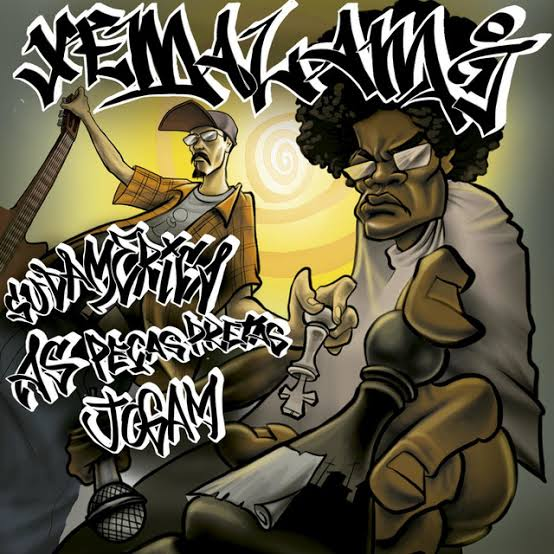

A CIDADE DO RAP
Seja bem vindo a nossa quebrada!
Conheça nossos Mc's e Eventos!
Jaysom Bandolleyro
Jaysom Bandolleyro, ex-integrante do famoso grupo de rap dos anos 90 (Zona Proibida), já emplacou o hit "Caminho das pedras", e em seu último album recente lançou "Caminho das pedras parte II" produzido por LC Mago dos Beats. Utilizando bases pesadas no estilo Chicano continua seu trabalho solo pelas periferias do extremo sul.
Lauro Pirata
Apesar de aparentar novo na cena, o MC já tem títulos memoráveis entre os rappers de SP. Em 2006, ganhou a 1° Batalha de Mcs vindo mais tarde se tornar Hexacampeão. Já dividiu palco com Emicida, Criolo e Rashid. Seu novo clipe, com a música que dá título ao CD, “Nós Somos Um”, acaba de estrear e está disponível no youtube.
Luis Semblantes
Nascido e criado no São José no extremo Sul de São Paulo. O Mc, ativista, educador e poeta, mistura um ritmo bem elaborado através de sua poesia. Seu último album "Floresça" é capaz de florescer literalmente suas idéias presas na caxola.
Clube Do Berro
Criado em 2003, é formado por 5 Mc's. Ladakipinis Hoodlum, Ezse de Doins, Alp lírico, Fantos Lion & Refri. Um grupo independente que produz suas próprias músicas no estúdio Danavalha Records, localizado no Grajaú. Seu ritmo boombap nos trás muito conteúdo e malandragem das ruas.
Mano Moneyz
Na caminhada desde 2007, M.Moneys é um Mc grajaúense que sintetiza cultura e críticas em sua poesia atípica e revolucionária, quebrando o paradigma obsoleto da sociedade. Só traga um dicionário e ouvidos para um momento de imersão musical.
Xe.Ma.La.Mi
Um dos maiores nomes da quebrada do Grajaú, Xemalami (Xeque Mate a la mission). Desde 2002 é um dos percursores no extremo Sul. Misturando rap, espanhol e cultura latina é puro boombap de qualidade. Ensinando Xadrez e promovendo eventos na sua região, pode ser considerado o grupo mais influente da quebrada.
Rodrigo Nonato
Um mestre na arte do boombap rimado. Rodrigo nonato Mc e freestaleiro que também é integrante e criador do grupo Dragões de Komodo, é residente do Graja e amante de rap pesado. Com um flow diferenciado e umas pancadas no beat, acaba de lançar seu single solo "Boombap" & "Jack Daniels".
Dragões de Komodo
Criado pelo Mc Rodrigo Nonato, conta com mais 1 M, o Phanthom de laa kalles juntamente do Dj Indião. Este último EP intitulado " A chave", trás uma mistura de rap alternativo e pesado. Atuantes da comunidade do Graja, é um prato cheio pra quem gosta da diversificação.
The monkeyz THC

The Monkey`s THC é um grupo de RAP formado no extremo sul da zona sul de São Paulo em meados de 2010, e traz a essência e excelência de uma arte pura e original. Contituído pelos Mc's Negro Z, Mike, Ramses e pelo baixista Leandro Duarte, é puro discernimento.
Epycentro
Epycentro é um coletivo de Mc's do Grajaú, Zona Sul de Sampa. Seu mentor JPA é o Mc que mais se destaca, usando beats de boombap com um toque oriental, nos trazendo muita rima boa que vale a pena conferir
Noob Saibot Mc
Mais um Mc promissor do Grajaú, Mc Noob Saibot, nos trás rimas e críticas ao atual sistema em que a periferia sobrevive. Com flow dinâmico e várias referências conta com participações Função RHK, Xemalami, Clube do Berro e o esquadrão de peso dos rappers do Grajaú.